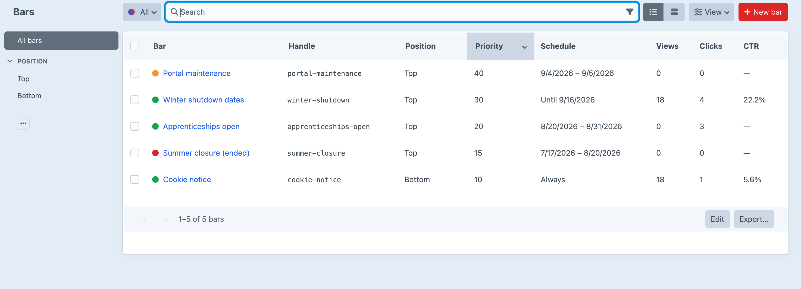

Say it at the top of the page.
Notification bars that are written in the control panel, targeted at the people who should see them, scheduled for when they matter — and never in a template.
Anything that varies per visitor rather than per request cannot be decided on the server without either defeating your page cache or keeping a record of the person. So the server sends every bar that could apply, hidden, and the browser picks the one that wins.
Where a condition is decided is not an implementation detail.
Two stacked announcements are not twice the message. They are half the attention each.
Editing a bar is how you say “this is a new thing to say”.
There is no paid tier, so there is nothing being held back for one.
Three integers per bar, per site, per day. That is the whole record.
Every notification bar with its schedule window, views, clicks and click-through rate.
